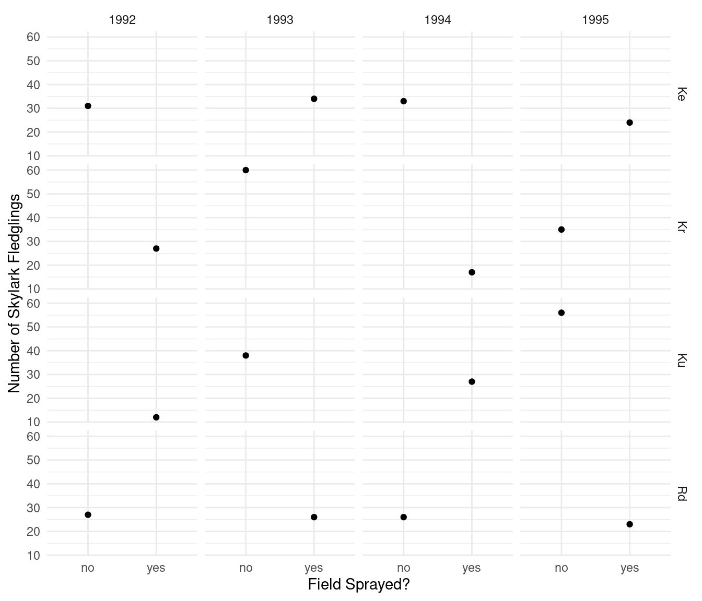
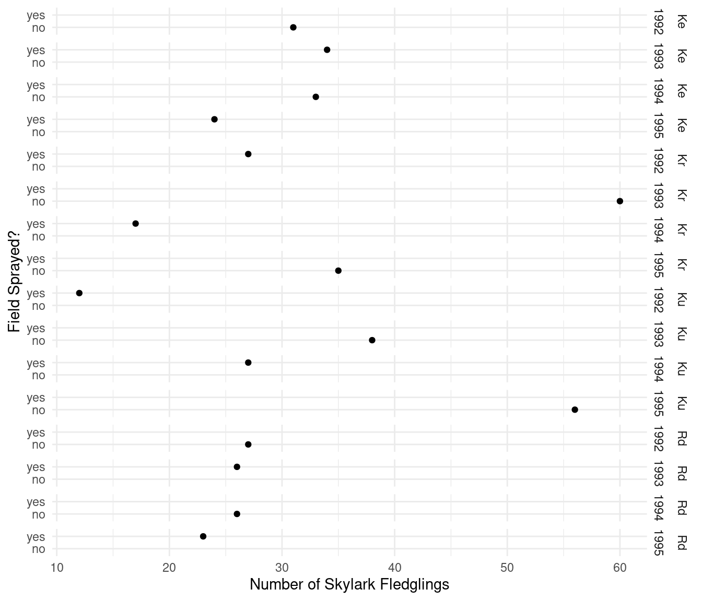
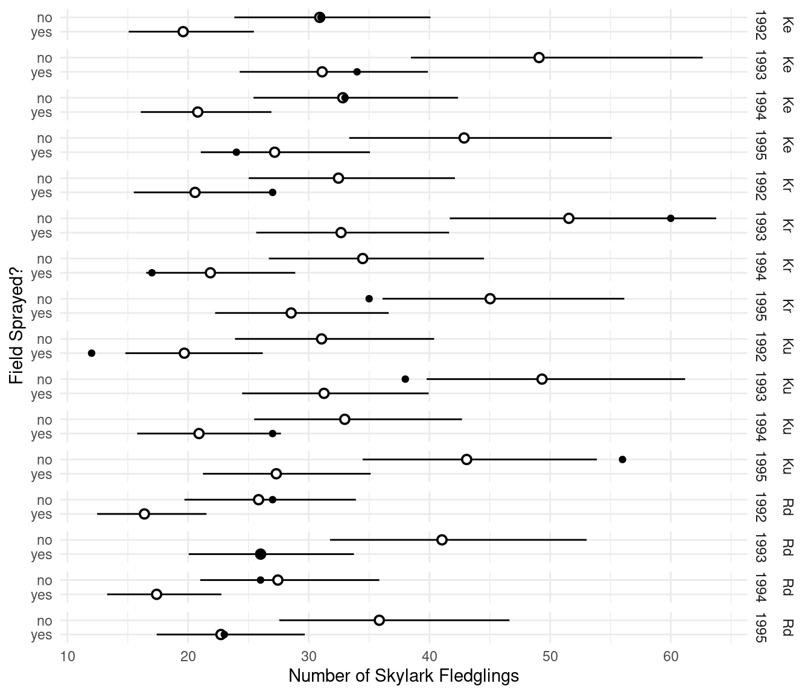
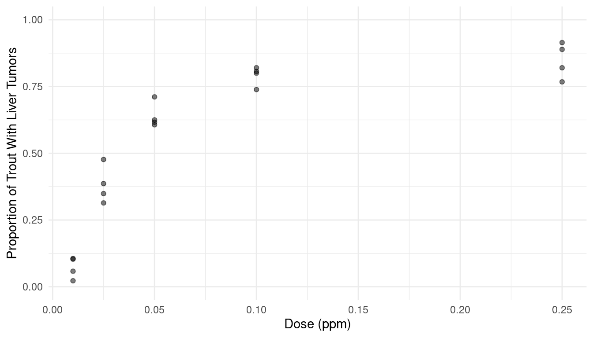
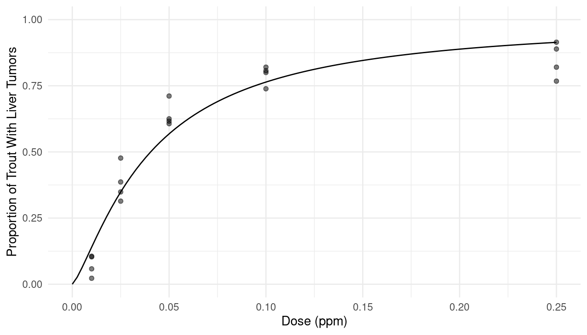
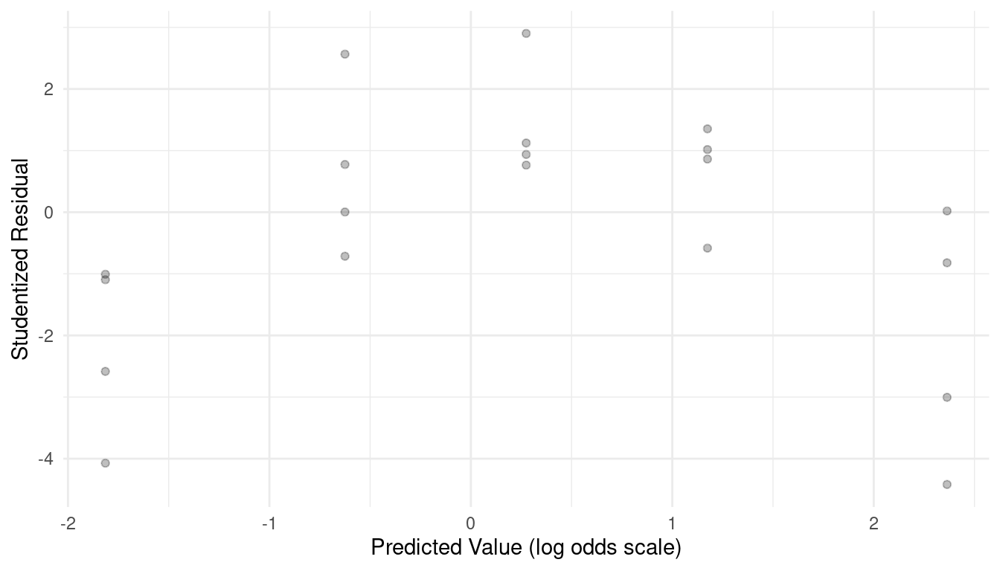

Monday, Mar 18
You can also download a PDF copy of this lecture.
This demonstration features the estimation of Poisson and logistic regression models, and the interpretation of rate and odds ratios.
Impact of Pesticides on Skylark Reproductivity
During the four summers from 1992 to 1995 researchers from the
National Environmental Research Institute in the Ministry of Environment
and Energy in Denmark conducted a study to examine how pesticide use
impacts skylark reproduction in barley fields.1 The study used a
fractional factorial design in which each year two of four fields were
sprayed with pesticides while the other two fields were not.2 Which
fields were sprayed was alternated so that a field was sprayed every
other year. The number of fledgling skylarks produced in each field each
year was recorded. The data are in the skylark data frame
from the trtools package. The data are plotted
below.
library(trtools)
library(ggplot2)
p <- ggplot(skylark, aes(x = spray, y = count)) +
geom_point() + facet_grid(field ~ year) + theme_minimal() +
labs(x = "Field Sprayed?", y = "Number of Skylark Fledglings")
plot(p)
Here is another way to visualize the data that flips the axes and
“combines” the field and year variables when
specifying facets.
p <- ggplot(skylark, aes(x = count, y = spray)) +
geom_point() + facet_grid(field + year ~ .) + theme_minimal() +
labs(y = "Field Sprayed?", x = "Number of Skylark Fledglings")
plot(p) The plots clearly shows the incomplete nature of the fractional factorial design. In any given year, a field either was or was not sprayed. The objective is to investigate the effect of spraying on the number of fledglings while controlling for the effects of year and field.
Estimate a Poisson regression model for the number of skylark fledglings as your response variable that will reproduce the following results.
cbind(summary(m)$coefficients, confint(m))Estimate Std. Error z value Pr(>|z|) 2.5 % 97.5 % (Intercept) 3.430943 0.13262 25.86999 1.450e-147 3.16352 3.68367 sprayyes -0.456126 0.09385 -4.86011 1.173e-06 -0.64141 -0.27324 fieldKr 0.049089 0.12672 0.38738 6.985e-01 -0.19929 0.29806 fieldKu 0.004964 0.12800 0.03879 9.691e-01 -0.24611 0.25625 fieldRd -0.179048 0.13417 -1.33452 1.820e-01 -0.44342 0.08326 year1993 0.462623 0.13064 3.54108 3.985e-04 0.20868 0.72149 year1994 0.060018 0.14149 0.42420 6.714e-01 -0.21735 0.33816 year1995 0.327281 0.13411 2.44041 1.467e-02 0.06596 0.59240Note that here
mis a model object created using theglmfunction.Solution: The results can be replicated as follows. Note that the output above indicates that only the “main effects” of spray, field, and year were specified. We can see that there are indicator variables for spray, field, and year, but no interaction terms.
m <- glm(count ~ spray + field + year, family = poisson, data = skylark) cbind(summary(m)$coefficients, confint(m))Estimate Std. Error z value Pr(>|z|) 2.5 % 97.5 % (Intercept) 3.430943 0.13262 25.86999 1.450e-147 3.16352 3.68367 sprayyes -0.456126 0.09385 -4.86011 1.173e-06 -0.64141 -0.27324 fieldKr 0.049089 0.12672 0.38738 6.985e-01 -0.19929 0.29806 fieldKu 0.004964 0.12800 0.03879 9.691e-01 -0.24611 0.25625 fieldRd -0.179048 0.13417 -1.33452 1.820e-01 -0.44342 0.08326 year1993 0.462623 0.13064 3.54108 3.985e-04 0.20868 0.72149 year1994 0.060018 0.14149 0.42420 6.714e-01 -0.21735 0.33816 year1995 0.327281 0.13411 2.44041 1.467e-02 0.06596 0.59240There is no offset variable here. We will assume the fields were all of the same size. But if they were not and we knew the area of each field (in a variable called
areafor example) we might use that as an offset by specifying the model as follows.m <- glm(count ~ offset(log(area)) + spray + field + year, family = poisson, data = skylark)Then we would be modeling the expected number of fledglings per unit area (e.g., number of fledglings per square square meter).
What is the estimated rate ratio for the effect of spraying? How can this be interpreted?
Solution: We can estimate this rate ratio several ways. Note that since there is no interaction involving
spraythe field and year does not matter.trtools::contrast(m, tf = exp, a = list(spray = "yes", field = "Ke", year = "1992"), b = list(spray = "no", field = "Ke", year = "1992"))estimate lower upper 0.6337 0.5273 0.7617We can interpret this estimated rate ratio as showing that the expected number of fledglings in a sprayed field is about 0.63 times that of a field that is not sprayed. We can also say that the expected number of fledglings in a sprayed field is about 37% less than that in a field that is not sprayed. We can “flip” the rate ratio as follows.
trtools::contrast(m, tf = exp, a = list(spray = "no", field = "Ke", year = "1992"), b = list(spray = "yes", field = "Ke", year = "1992"))estimate lower upper 1.578 1.313 1.897We can interpret this estimated rate ratio as showing that the expected number of fledglings in a field that is not sprayed is about 1.58 times that of a field that is sprayed, or that the number of fledglings in a field that is not sprayed is about 58% higher than a field that is sprayed.
To estimate the rate ratio using the emmeans package we need to use the
emmeansfunction to produce the estimated expected counts and then thepairsfunction to produce rate ratios. Note that using~spray|field*yearwill allow us to produce a rate ratio for each combination of field and year.library(emmeans) pairs(emmeans(m, ~spray|field*year, type = "response"), infer = TRUE)field = Ke, year = 1992: contrast ratio SE df asymp.LCL asymp.UCL null z.ratio p.value no / yes 1.58 0.148 Inf 1.31 1.9 1 4.860 <.0001 field = Kr, year = 1992: contrast ratio SE df asymp.LCL asymp.UCL null z.ratio p.value no / yes 1.58 0.148 Inf 1.31 1.9 1 4.860 <.0001 field = Ku, year = 1992: contrast ratio SE df asymp.LCL asymp.UCL null z.ratio p.value no / yes 1.58 0.148 Inf 1.31 1.9 1 4.860 <.0001 field = Rd, year = 1992: contrast ratio SE df asymp.LCL asymp.UCL null z.ratio p.value no / yes 1.58 0.148 Inf 1.31 1.9 1 4.860 <.0001 field = Ke, year = 1993: contrast ratio SE df asymp.LCL asymp.UCL null z.ratio p.value no / yes 1.58 0.148 Inf 1.31 1.9 1 4.860 <.0001 field = Kr, year = 1993: contrast ratio SE df asymp.LCL asymp.UCL null z.ratio p.value no / yes 1.58 0.148 Inf 1.31 1.9 1 4.860 <.0001 field = Ku, year = 1993: contrast ratio SE df asymp.LCL asymp.UCL null z.ratio p.value no / yes 1.58 0.148 Inf 1.31 1.9 1 4.860 <.0001 field = Rd, year = 1993: contrast ratio SE df asymp.LCL asymp.UCL null z.ratio p.value no / yes 1.58 0.148 Inf 1.31 1.9 1 4.860 <.0001 field = Ke, year = 1994: contrast ratio SE df asymp.LCL asymp.UCL null z.ratio p.value no / yes 1.58 0.148 Inf 1.31 1.9 1 4.860 <.0001 field = Kr, year = 1994: contrast ratio SE df asymp.LCL asymp.UCL null z.ratio p.value no / yes 1.58 0.148 Inf 1.31 1.9 1 4.860 <.0001 field = Ku, year = 1994: contrast ratio SE df asymp.LCL asymp.UCL null z.ratio p.value no / yes 1.58 0.148 Inf 1.31 1.9 1 4.860 <.0001 field = Rd, year = 1994: contrast ratio SE df asymp.LCL asymp.UCL null z.ratio p.value no / yes 1.58 0.148 Inf 1.31 1.9 1 4.860 <.0001 field = Ke, year = 1995: contrast ratio SE df asymp.LCL asymp.UCL null z.ratio p.value no / yes 1.58 0.148 Inf 1.31 1.9 1 4.860 <.0001 field = Kr, year = 1995: contrast ratio SE df asymp.LCL asymp.UCL null z.ratio p.value no / yes 1.58 0.148 Inf 1.31 1.9 1 4.860 <.0001 field = Ku, year = 1995: contrast ratio SE df asymp.LCL asymp.UCL null z.ratio p.value no / yes 1.58 0.148 Inf 1.31 1.9 1 4.860 <.0001 field = Rd, year = 1995: contrast ratio SE df asymp.LCL asymp.UCL null z.ratio p.value no / yes 1.58 0.148 Inf 1.31 1.9 1 4.860 <.0001 Confidence level used: 0.95 Intervals are back-transformed from the log scale Tests are performed on the log scaleNote that by default this estimates the rate ratio for the expected number of fledglings in a field that is not sprayed to that of a field that is sprayed. To “flip” the rate ratio from the default include the option
reverse = TRUEas follows.pairs(emmeans(m, ~spray|field*year, type = "response"), infer = TRUE, reverse = TRUE)field = Ke, year = 1992: contrast ratio SE df asymp.LCL asymp.UCL null z.ratio p.value yes / no 0.634 0.0595 Inf 0.527 0.762 1 -4.860 <.0001 field = Kr, year = 1992: contrast ratio SE df asymp.LCL asymp.UCL null z.ratio p.value yes / no 0.634 0.0595 Inf 0.527 0.762 1 -4.860 <.0001 field = Ku, year = 1992: contrast ratio SE df asymp.LCL asymp.UCL null z.ratio p.value yes / no 0.634 0.0595 Inf 0.527 0.762 1 -4.860 <.0001 field = Rd, year = 1992: contrast ratio SE df asymp.LCL asymp.UCL null z.ratio p.value yes / no 0.634 0.0595 Inf 0.527 0.762 1 -4.860 <.0001 field = Ke, year = 1993: contrast ratio SE df asymp.LCL asymp.UCL null z.ratio p.value yes / no 0.634 0.0595 Inf 0.527 0.762 1 -4.860 <.0001 field = Kr, year = 1993: contrast ratio SE df asymp.LCL asymp.UCL null z.ratio p.value yes / no 0.634 0.0595 Inf 0.527 0.762 1 -4.860 <.0001 field = Ku, year = 1993: contrast ratio SE df asymp.LCL asymp.UCL null z.ratio p.value yes / no 0.634 0.0595 Inf 0.527 0.762 1 -4.860 <.0001 field = Rd, year = 1993: contrast ratio SE df asymp.LCL asymp.UCL null z.ratio p.value yes / no 0.634 0.0595 Inf 0.527 0.762 1 -4.860 <.0001 field = Ke, year = 1994: contrast ratio SE df asymp.LCL asymp.UCL null z.ratio p.value yes / no 0.634 0.0595 Inf 0.527 0.762 1 -4.860 <.0001 field = Kr, year = 1994: contrast ratio SE df asymp.LCL asymp.UCL null z.ratio p.value yes / no 0.634 0.0595 Inf 0.527 0.762 1 -4.860 <.0001 field = Ku, year = 1994: contrast ratio SE df asymp.LCL asymp.UCL null z.ratio p.value yes / no 0.634 0.0595 Inf 0.527 0.762 1 -4.860 <.0001 field = Rd, year = 1994: contrast ratio SE df asymp.LCL asymp.UCL null z.ratio p.value yes / no 0.634 0.0595 Inf 0.527 0.762 1 -4.860 <.0001 field = Ke, year = 1995: contrast ratio SE df asymp.LCL asymp.UCL null z.ratio p.value yes / no 0.634 0.0595 Inf 0.527 0.762 1 -4.860 <.0001 field = Kr, year = 1995: contrast ratio SE df asymp.LCL asymp.UCL null z.ratio p.value yes / no 0.634 0.0595 Inf 0.527 0.762 1 -4.860 <.0001 field = Ku, year = 1995: contrast ratio SE df asymp.LCL asymp.UCL null z.ratio p.value yes / no 0.634 0.0595 Inf 0.527 0.762 1 -4.860 <.0001 field = Rd, year = 1995: contrast ratio SE df asymp.LCL asymp.UCL null z.ratio p.value yes / no 0.634 0.0595 Inf 0.527 0.762 1 -4.860 <.0001 Confidence level used: 0.95 Intervals are back-transformed from the log scale Tests are performed on the log scaleFinally the estimated rate ratio can be found from the parameter estimates. This may not be possible for models with interactions, depending on the parameterization, but it does work here.
exp(cbind(coef(m), confint(m)))2.5 % 97.5 % (Intercept) 30.9058 23.6537 39.7921 sprayyes 0.6337 0.5265 0.7609 fieldKr 1.0503 0.8193 1.3472 fieldKu 1.0050 0.7818 1.2921 fieldRd 0.8361 0.6418 1.0868 year1993 1.5882 1.2321 2.0575 year1994 1.0619 0.8046 1.4024 year1995 1.3872 1.0682 1.8083The confidence interval is slightly different here. This is because
confintuses what is called a profile likelihood confidence interval whereascontrastand functions in the emmeans package use what are called Wald confidence intervals.What is the estimated expected number of fledglings for each condition?
Solution: This can be done several ways. For a given field and year, for example, we can estimate the expected count for field that are sprayed and not sprayed.
trtools::contrast(m, tf = exp, a = list(spray = c("no","yes"), field = "Ke", year = "1992"), cnames = c("no spray", "spray"))estimate lower upper no spray 30.91 23.83 40.08 spray 19.59 15.07 25.45But by using
emmeanswe can easily get the estimated expected counts for all combinations of the three factors.emmeans(m, ~spray|field*year, type = "response")field = Ke, year = 1992: spray rate SE df asymp.LCL asymp.UCL no 30.9 4.10 Inf 23.8 40.1 yes 19.6 2.62 Inf 15.1 25.4 field = Kr, year = 1992: spray rate SE df asymp.LCL asymp.UCL no 32.5 4.31 Inf 25.0 42.1 yes 20.6 2.97 Inf 15.5 27.3 field = Ku, year = 1992: spray rate SE df asymp.LCL asymp.UCL no 31.1 4.16 Inf 23.9 40.4 yes 19.7 2.87 Inf 14.8 26.2 field = Rd, year = 1992: spray rate SE df asymp.LCL asymp.UCL no 25.8 3.58 Inf 19.7 33.9 yes 16.4 2.28 Inf 12.5 21.5 field = Ke, year = 1993: spray rate SE df asymp.LCL asymp.UCL no 49.1 6.11 Inf 38.5 62.6 yes 31.1 3.94 Inf 24.3 39.9 field = Kr, year = 1993: spray rate SE df asymp.LCL asymp.UCL no 51.6 5.59 Inf 41.7 63.8 yes 32.7 4.04 Inf 25.6 41.6 field = Ku, year = 1993: spray rate SE df asymp.LCL asymp.UCL no 49.3 5.42 Inf 39.8 61.2 yes 31.3 3.90 Inf 24.5 39.9 field = Rd, year = 1993: spray rate SE df asymp.LCL asymp.UCL no 41.0 5.37 Inf 31.8 53.0 yes 26.0 3.45 Inf 20.1 33.7 field = Ke, year = 1994: spray rate SE df asymp.LCL asymp.UCL no 32.8 4.28 Inf 25.4 42.4 yes 20.8 2.73 Inf 16.1 26.9 field = Kr, year = 1994: spray rate SE df asymp.LCL asymp.UCL no 34.5 4.50 Inf 26.7 44.5 yes 21.8 3.11 Inf 16.5 28.9 field = Ku, year = 1994: spray rate SE df asymp.LCL asymp.UCL no 33.0 4.34 Inf 25.5 42.7 yes 20.9 3.00 Inf 15.8 27.7 field = Rd, year = 1994: spray rate SE df asymp.LCL asymp.UCL no 27.4 3.74 Inf 21.0 35.8 yes 17.4 2.39 Inf 13.3 22.8 field = Ke, year = 1995: spray rate SE df asymp.LCL asymp.UCL no 42.9 5.49 Inf 33.4 55.1 yes 27.2 3.54 Inf 21.1 35.1 field = Kr, year = 1995: spray rate SE df asymp.LCL asymp.UCL no 45.0 5.07 Inf 36.1 56.1 yes 28.5 3.63 Inf 22.2 36.6 field = Ku, year = 1995: spray rate SE df asymp.LCL asymp.UCL no 43.1 4.91 Inf 34.5 53.9 yes 27.3 3.51 Inf 21.2 35.1 field = Rd, year = 1995: spray rate SE df asymp.LCL asymp.UCL no 35.8 4.81 Inf 27.6 46.6 yes 22.7 3.09 Inf 17.4 29.7 Confidence level used: 0.95 Intervals are back-transformed from the log scaleThe output will be organized a little differently if we use
~spray*field*year.emmeans(m, ~spray*field*year, type = "response")spray field year rate SE df asymp.LCL asymp.UCL no Ke 1992 30.9 4.10 Inf 23.8 40.1 yes Ke 1992 19.6 2.62 Inf 15.1 25.4 no Kr 1992 32.5 4.31 Inf 25.0 42.1 yes Kr 1992 20.6 2.97 Inf 15.5 27.3 no Ku 1992 31.1 4.16 Inf 23.9 40.4 yes Ku 1992 19.7 2.87 Inf 14.8 26.2 no Rd 1992 25.8 3.58 Inf 19.7 33.9 yes Rd 1992 16.4 2.28 Inf 12.5 21.5 no Ke 1993 49.1 6.11 Inf 38.5 62.6 yes Ke 1993 31.1 3.94 Inf 24.3 39.9 no Kr 1993 51.6 5.59 Inf 41.7 63.8 yes Kr 1993 32.7 4.04 Inf 25.6 41.6 no Ku 1993 49.3 5.42 Inf 39.8 61.2 yes Ku 1993 31.3 3.90 Inf 24.5 39.9 no Rd 1993 41.0 5.37 Inf 31.8 53.0 yes Rd 1993 26.0 3.45 Inf 20.1 33.7 no Ke 1994 32.8 4.28 Inf 25.4 42.4 yes Ke 1994 20.8 2.73 Inf 16.1 26.9 no Kr 1994 34.5 4.50 Inf 26.7 44.5 yes Kr 1994 21.8 3.11 Inf 16.5 28.9 no Ku 1994 33.0 4.34 Inf 25.5 42.7 yes Ku 1994 20.9 3.00 Inf 15.8 27.7 no Rd 1994 27.4 3.74 Inf 21.0 35.8 yes Rd 1994 17.4 2.39 Inf 13.3 22.8 no Ke 1995 42.9 5.49 Inf 33.4 55.1 yes Ke 1995 27.2 3.54 Inf 21.1 35.1 no Kr 1995 45.0 5.07 Inf 36.1 56.1 yes Kr 1995 28.5 3.63 Inf 22.2 36.6 no Ku 1995 43.1 4.91 Inf 34.5 53.9 yes Ku 1995 27.3 3.51 Inf 21.2 35.1 no Rd 1995 35.8 4.81 Inf 27.6 46.6 yes Rd 1995 22.7 3.09 Inf 17.4 29.7 Confidence level used: 0.95 Intervals are back-transformed from the log scaleNote that the arguments
tf = expandtype = "response"are necessary when usingcontrastandemmeans, respectively, so that that we are estimating the expected response rather than the log of the expected response. Another approach is to use theglmintfunction from the trtools package.d <- expand.grid(spray = c("yes", "no"), field = c("Ke","Kr","Ku","Rd"), year = c("1992","1993","1994","1995")) cbind(d, trtools::glmint(m, newdata = d))spray field year fit low upp 1 yes Ke 1992 19.59 15.07 25.45 2 no Ke 1992 30.91 23.83 40.08 3 yes Kr 1992 20.57 15.50 27.31 4 no Kr 1992 32.46 25.02 42.11 5 yes Ku 1992 19.68 14.80 26.18 6 no Ku 1992 31.06 23.88 40.39 7 yes Rd 1992 16.38 12.46 21.52 8 no Rd 1992 25.84 19.69 33.90 9 yes Ke 1993 31.11 24.27 39.87 10 no Ke 1993 49.09 38.46 62.65 11 yes Kr 1993 32.67 25.64 41.63 12 no Kr 1993 51.56 41.68 63.76 13 yes Ku 1993 31.26 24.47 39.93 14 no Ku 1993 49.33 39.77 61.19 15 yes Rd 1993 26.01 20.05 33.74 16 no Rd 1993 41.04 31.76 53.03 17 yes Ke 1994 20.80 16.08 26.90 18 no Ke 1994 32.82 25.42 42.37 19 yes Kr 1994 21.84 16.52 28.88 20 no Kr 1994 34.47 26.69 44.52 21 yes Ku 1994 20.90 15.78 27.69 22 no Ku 1994 32.98 25.47 42.70 23 yes Rd 1994 17.39 13.29 22.76 24 no Rd 1994 27.44 21.00 35.84 25 yes Ke 1995 27.17 21.05 35.07 26 no Ke 1995 42.87 33.35 55.11 27 yes Kr 1995 28.54 22.24 36.62 28 no Kr 1995 45.03 36.11 56.15 29 yes Ku 1995 27.30 21.22 35.13 30 no Ku 1995 43.09 34.46 53.88 31 yes Rd 1995 22.72 17.39 29.67 32 no Rd 1995 35.84 27.55 46.63This function does not require us to specify something like
tf = expbecause it automatically detects the link function and applies the appropriate function to produce the estimated expected response. Theglmintfunction is particularly useful for making plots that include confidence intervals.d <- cbind(d, trtools::glmint(m, newdata = d)) p <- ggplot(skylark, aes(x = count, y = spray)) + geom_pointrange(aes(x = fit, xmin = low, xmax = upp), shape = 21, fill = "white", data = d) + geom_point() + facet_grid(field + year ~ .) + theme_minimal() + labs(y = "Field Sprayed?", x = "Number of Skylark Fledglings") plot(p)
Aflatoxicol and Liver Tumors in Trout
The data in the data frame ex2116 in the
Sleuth3 package are from an experiment that
investigated the relationship between aflatoxicol and liver tumors in
trout. The figure below shows the proportion of trout in each tank that
developed liver tumors as well as the dose of aflatoxicol to which the
trout were exposed. Aflatoxicol is a metabolite of Aflatoxin B1, a toxic
by-product produced by a mold that infects some nuts and grains. Twenty
tanks of rainbow trout embryos were exposed to one of five doses of
aflatoxicol for one hour. The number of fish in each tank that developed
liver tumors one year later was then observed. The plot below shows the
data.
library(Sleuth3)
library(ggplot2)
p <- ggplot(ex2116, aes(x = Dose, y = Tumor/Total)) +
geom_point(alpha = 0.5) + theme_minimal() + ylim(0, 1) +
labs(x = "Dose (ppm)", y = "Proportion of Trout With Liver Tumors")
plot(p)
Note that Tumor is the number of trout in a tank that
developed tumors, and Total is the number of trout in the
tank. The goal here is to estimate the effect of aflatoxicol on the risk
of liver tumors in trout. Here we will consider three different logistic
regression models.
Estimating a logistic regression model for the probability of tumor development as a function of the dose of aflatoxicol as a quantitative explanatory variable. You should be able to replicate the following results.
cbind(summary(m)$coefficients, confint(m))Estimate Std. Error z value Pr(>|z|) 2.5 % 97.5 % (Intercept) -0.867 0.07673 -11.3 1.321e-29 -1.019 -0.7179 Dose 14.334 0.93695 15.3 7.838e-53 12.558 16.2346Plot the model with the raw data, and estimate and interpret the odds ratio for the effect of increasing dose by 0.05 ppm.3
Solution: We can estimate the model as follows.
m <- glm(cbind(Tumor, Total - Tumor) ~ Dose, family = binomial, data = ex2116) summary(m)$coefficientsEstimate Std. Error z value Pr(>|z|) (Intercept) -0.867 0.07673 -11.3 1.321e-29 Dose 14.334 0.93695 15.3 7.838e-53Here is a plot of the estimated model showing the probability of tumor development as a function of dose of aflatoxicol.
d <- data.frame(Dose = seq(0, 0.25, length = 100)) d$yhat <- predict(m, newdata = d, type = "response") p <- ggplot(ex2116, aes(x = Dose, y = Tumor/Total)) + geom_point(alpha = 0.5) + theme_minimal() + ylim(0, 1) + geom_line(aes(y = yhat), data = d) + labs(x = "Dose (ppm)", y = "Proportion of Trout With Liver Tumors") plot(p) The plot suggests that the model does not fit the data well. But the
odds ratio can be estimated as follows.
The plot suggests that the model does not fit the data well. But the
odds ratio can be estimated as follows.trtools::contrast(m, a = list(Dose = 0.1), b = list(Dose = 0.05), tf = exp)estimate lower upper 2.048 1.868 2.245pairs(emmeans(m, ~Dose, at = list(Dose = c(0.1, 0.05)), type = "response"), infer = TRUE)contrast odds.ratio SE df asymp.LCL asymp.UCL null z.ratio p.value Dose0.1 / Dose0.05 2.05 0.0959 Inf 1.87 2.24 1 15.298 <.0001 Confidence level used: 0.95 Intervals are back-transformed from the log odds ratio scale Tests are performed on the log odds ratio scaleThe estimate odds ratio shows that the odds of tumor development increases by a factor of about 2.05 (i.e., about a 105% increase in the odds of tumor development) per 0.05 ppm increase in the dose of aflatoxicol. Note that for this model the odds ratio is the same for any 0.05 ppm increase in the dose. For example, the same odds ratio would be found if dose was increased from 0.1 ppm to 0.15 ppm.
Estimate a logistic regression model like the one above but using the logarithm of the dose as the explanatory variable (i.e., apply a log transformation to dose). You should be able to replicate the following results.
cbind(summary(m)$coefficients, confint(m))Estimate Std. Error z value Pr(>|z|) 2.5 % 97.5 % (Intercept) 4.163 0.20846 19.97 9.564e-89 3.763 4.581 log(Dose) 1.298 0.06434 20.17 1.628e-90 1.174 1.427Plot the model with the raw data, and estimate and interpret the odds ratio for the effect of doubling the dose of aflatoxicol.
Solution: We can estimate the model as follows.
m <- glm(cbind(Tumor, Total-Tumor) ~ log(Dose), family = binomial, data = ex2116) cbind(summary(m)$coefficients, confint(m))Estimate Std. Error z value Pr(>|z|) 2.5 % 97.5 % (Intercept) 4.163 0.20846 19.97 9.564e-89 3.763 4.581 log(Dose) 1.298 0.06434 20.17 1.628e-90 1.174 1.427Here is a plot of the estimated model showing the probability of tumor development as a function of dose of aflatoxicol.
d <- data.frame(Dose = seq(0, 0.25, length = 100)) d$yhat <- predict(m, newdata = d, type = "response") p <- ggplot(ex2116, aes(x = Dose, y = Tumor/Total)) + geom_point(alpha = 0.5) + theme_minimal() + ylim(0, 1) + geom_line(aes(y = yhat), data = d) + labs(x = "Dose (ppm)", y = "Proportion of Trout With Liver Tumors") plot(p) This looks like an improvement, but a residual plot shows a trend which suggests that the model may still not have quite captured the relationship.
ex2116$yhat <- predict(m) ex2116$residual <- rstudent(m) p <- ggplot(ex2116, aes(x = yhat, y = residual)) + theme_minimal() + geom_point(alpha = 0.25) + labs(x = "Predicted Value (log odds scale)", y = "Studentized Residual") plot(p) The estimated odds ratio for the effect of doubling dose can be obtained as follows.
trtools::contrast(m, a = list(Dose = 0.2), b = list(Dose = 0.1), tf = exp)estimate lower upper 2.459 2.253 2.684pairs(emmeans(m, ~Dose, at = list(Dose = c(0.2, 0.1)), type = "response"), infer = TRUE)contrast odds.ratio SE df asymp.LCL asymp.UCL null z.ratio p.value Dose0.2 / Dose0.1 2.46 0.11 Inf 2.25 2.68 1 20.175 <.0001 Confidence level used: 0.95 Intervals are back-transformed from the log odds ratio scale Tests are performed on the log odds ratio scaleThis odds ratio shows that doubling the dose of aflatoxicol would increase the odds of tumor development by a factor of about 2.46 (i.e., about a 146% increase in the odds of tumor development).
Rather than trying to decide between using dose or some transformation of dose in the model, we can instead define dose as a 5-level factor. With this we do not need to assume a particular mathematical relationship between dose and the probability (or odds) of tumor development. But there are a couple of disadvantages. One is that inferences are limited to those dose values used in the study. Another is that it requires more parameters which can result in larger standard errors. There are two ways we could specify dose as a factor. One would be to create a new variable.
ex2116$Dosef <- factor(ex2116$Dose)The levels of
Dosefwill be the original values ofDosebut converted to strings, which we can see if we use thelevelsfunction.levels(ex2116$Dosef)[1] "0.01" "0.025" "0.05" "0.1" "0.25"Another approach is to replace
Dosein the model formula withfactor(Dose). Using this latter approach estimate a logistic regression model with dose as a categorical explanatory variable. Also estimate and interpret the odds ratios for the effect of a dose of 0.025 ppm versus 0.01 ppm, 0.05 ppm versus 0.01 ppm, 0.1 ppm versus 0.01 ppm, and 0.25 ppm versus 0.01 ppm.4Solution: Here is how to estimate this model.
m <- glm(cbind(Tumor, Total-Tumor) ~ factor(Dose), family = binomial, data = ex2116) cbind(summary(m)$coefficients, confint(m))Estimate Std. Error z value Pr(>|z|) 2.5 % 97.5 % (Intercept) -2.556 0.2076 -12.310 8.049e-35 -2.988 -2.171 factor(Dose)0.025 2.073 0.2353 8.809 1.264e-18 1.628 2.553 factor(Dose)0.05 3.132 0.2354 13.306 2.130e-40 2.688 3.614 factor(Dose)0.1 3.890 0.2453 15.857 1.252e-56 3.427 4.391 factor(Dose)0.25 4.260 0.2566 16.605 6.436e-62 3.775 4.784The odds ratios can be estimated as follows.
trtools::contrast(m, tf = exp, a = list(Dose = c(0.025,0.05,0.1,0.25)), b = list(Dose = 0.01))estimate lower upper 7.945 5.01 12.60 22.920 14.45 36.36 48.909 30.24 79.10 70.840 42.84 117.13contrast(emmeans(m, ~Dose, type = "response"), method = "trt.vs.ctrl", ref = 1, adjust = "none", infer = TRUE)contrast odds.ratio SE df asymp.LCL asymp.UCL null z.ratio p.value Dose0.025 / Dose0.01 7.94 1.87 Inf 5.01 12.6 1 8.809 <.0001 Dose0.05 / Dose0.01 22.92 5.39 Inf 14.45 36.4 1 13.306 <.0001 Dose0.1 / Dose0.01 48.91 12.00 Inf 30.24 79.1 1 15.857 <.0001 Dose0.25 / Dose0.01 70.84 18.18 Inf 42.84 117.1 1 16.605 <.0001 Confidence level used: 0.95 Intervals are back-transformed from the log odds ratio scale Tests are performed on the log odds ratio scaleNote that in the emmeans package the
contrastfunction is a bit different that the function of the same name in the trtools package, but there are some similarities in therms of what these functions are capable of doing. Heremethod = "trt.vs.ctrl"allows us to compare all but one of the levels with a “reference” level, which is specified byref = 1meaning the first level as they are ordered (here, a dose of 0.01 ppm). The odds ratios show that the odds of tumor development at a dose of 0.025 ppm is about 7.94 times the odds at a dose of 0.01 ppm (i.e., about 694% higher), the odds of tumor development at a dose of 0.05 ppm is about 22.92 times the odds at a dose of 0.01 ppm (i.e., about 2192% higher), the odds of tumor development at a dose of 0.1 ppm is about 48.91 times the odds at a dose of 0.01 ppm (i.e., about 4791% higher), and the odds of tumor development at a dose of 0.25 ppm is about 70.84 times the odds at a dose of 0.01 ppm (i.e., about 6984% higher).Estimate the odds and probability of tumor development at each value of dose used in the study for any of the three models.
Solution: I will use the model from the previous problem for this. Using
contrastthe odds and probabilities can be estimated as follows.trtools::contrast(m, a = list(Dose = c(0.01,0.025,0.05,0.1,0.25)), cnames = c(0.01,0.025,0.05,0.1,0.25), tf = exp) # oddsestimate lower upper 0.01 0.07764 0.05168 0.1166 0.025 0.61682 0.49654 0.7662 0.05 1.77953 1.43188 2.2116 0.1 3.79730 2.93938 4.9056 0.25 5.50000 4.09298 7.3907trtools::contrast(m, a = list(Dose = c(0.01,0.025,0.05,0.1,0.25)), cnames = c(0.01,0.025,0.05,0.1,0.25), tf = plogis) # probabilitiesestimate lower upper 0.01 0.07205 0.04914 0.1044 0.025 0.38150 0.33179 0.4338 0.05 0.64023 0.58880 0.6886 0.1 0.79155 0.74615 0.8307 0.25 0.84615 0.80365 0.8808To estimate the odds using
emmeanswe need to use a “hack” that is not very intuitive.emmeans(m, ~Dose, type = "response", tran = "log")Dose prob SE df asymp.LCL asymp.UCL 0.010 0.078 0.0161 Inf 0.052 0.117 0.025 0.617 0.0683 Inf 0.497 0.766 0.050 1.780 0.1973 Inf 1.432 2.212 0.100 3.797 0.4962 Inf 2.939 4.906 0.250 5.500 0.8292 Inf 4.093 7.391 Confidence level used: 0.95 Intervals are back-transformed from the log scaleNotice that somewhat confusingly the output still labels the estimates
probbut these are odds as can be seen when comparing them with what was obtained usingcontrast. Estimated probabilities are simpler to obtain.emmeans(m, ~Dose, type = "response")Dose prob SE df asymp.LCL asymp.UCL 0.010 0.072 0.0139 Inf 0.0491 0.104 0.025 0.382 0.0261 Inf 0.3318 0.434 0.050 0.640 0.0255 Inf 0.5888 0.689 0.100 0.791 0.0216 Inf 0.7462 0.831 0.250 0.846 0.0196 Inf 0.8037 0.881 Confidence level used: 0.95 Intervals are back-transformed from the logit scaleHere using
type = "response"means that we want inferences on the scale of the response, which is a proportion, and the expected proportion is also the probability which is what we want.
Odderskær, P., Prang, A., Eknegaard, N., & Andersen, P. N. (1997). Skylark reproduction in pesticide treated fields (Comparative studies of Alauda arvensis breeding performance in sprayed and unsprayed barley fields). Bekæmpelsesmiddelforskning fra Miljøstyrelsennr, 32, National Environmental Research Institute, Ministry of the Environment and Energy, Denmark: Danish Environmental Protection Agency.↩︎
A fractional factorial design is a design in which observations are made at only a subset of the possible combinations of levels of two or more factors. Such designs are quite economical but can preclude the estimation of interactions. This does not mean that such interactions are not present, but rather that if they are they are confounded with the main effects. For this particular design it is only possible to fully estimate a model with “main effects” for each of the three factors. Ideally factional factorial designs are used when interactions are negligible.↩︎
Here \(e^{\beta_1}\) would be the odds ratio for the effect of increasing dose by 1 ppm. However that is probably not a realistic effect as it would be a relatively large increase in dose. The study only considered up to 0.25 ppm. Using
contrastis convenient here to estimate the odds ratio for the effect of an arbitrary change in dose.↩︎Note that how you specify the levels of dose will depend on whether you created a new variable like
Dosefor converted it to a factor within the model formula withfactor(Dose). For the latter you will need to specify dose as a number but if you created it to a new variable you will need to specify it as a string by enclosing it in quotes.↩︎